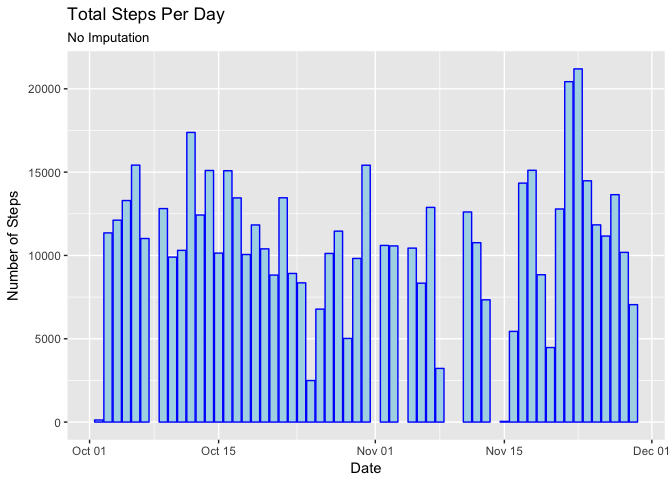
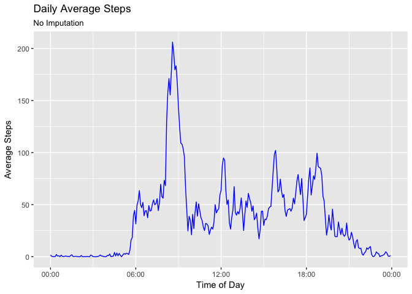
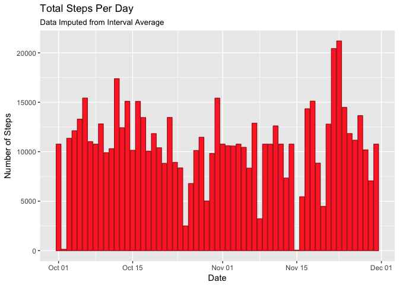
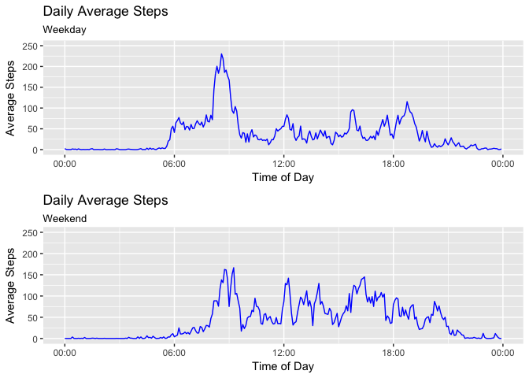

knitr::opts_chunk$set(echo = TRUE)
library(ggplot2)
library(scales)
Sys.setenv(TZ='UTC')The step data is loaded from a ‘activity.csv’ file provided by the instructor. The variables included in this dataset are:
A fourth column was appended using the code below to represent a POSIXct datetiem value, where the date and five-minute time of day are pasted together and parsed using the strptime() function.
activityData <- read.csv(
file = 'activity.csv',
colClasses = c('integer', 'character','character'),
header = TRUE,
na.strings = c('NA')
)
## convert the date string to a POSIX value
activityData$date <- as.POSIXct(
strptime(activityData$date, "%Y-%m-%d"),
tz="UTC"
)
## convert the interval string to a POSIX value
activityData$interval <- as.POSIXct(
strptime(
paste(
as.Date(as.POSIXct(0,
origin = "1970-01-01",
tz = "UTC")),
" ",
substr(sprintf("%04s", activityData$interval), 1, 2),
":",
substr(sprintf("%04s", activityData$interval), 3, 4),
":00",
sep = ""
),
"%Y-%m-%d %H:%M:%S"
),
tz = "UTC"
)
## combine the date and time into a single value
activityData$dateTime <- as.POSIXct(
strptime(
paste( activityData$date,
strftime(activityData$interval, format = "%H:%M:%S", tz = "UTC"),
sep = " "
),
"%Y-%m-%d %H:%M:%S"
),
tz = "UTC"
)totalSteps <- aggregate(
formula = steps ~ date,
data = activityData,
FUN = sum,
na.action = na.omit
)
dailyStepsAvg <- mean(totalSteps$steps)
dailyStepsMedian <- median(totalSteps$steps)plotTotalSteps <- ggplot(totalSteps, aes(date))
plotTotalSteps + geom_bar(
aes(weight = steps),
color = "blue",
fill = "lightblue"
) +
labs(title = "Total Steps Per Day",
subtitle = "No Imputation",
x = "Date",
y = "Number of Steps"
) The average number of steps per day is 10766.2.
The median number of steps per day is 10765.
I guess I need to make a time-series plot of the inter-average for multiple days here.
# create interval averages for all days
intervalStepsAvg <- aggregate(
formula = steps ~ interval,
data = activityData,
FUN = mean,
na.action = na.omit
)
# determine which interval has the largest number of steps
intervalStepsMax <- intervalStepsAvg[which.max(intervalStepsAvg$steps),]# plot 'em intervals up real good
plotIntervalSteps <- ggplot(intervalStepsAvg, aes(interval, steps))
plotIntervalSteps +
geom_path(color = "blue") +
labs(title = "Daily Average Steps",
subtitle = "No Imputation",
x = "Time of Day",
y = "Average Steps") +
scale_x_datetime(labels = date_format("%H:%M", tz = "UTC"))
The 5-minute interval containing the most steps is 8:35 AM with 206 steps.
What I want to do here is append an additional column to the data frame, where the original steps values is used if not NA, and if the value is missing, substitute the average five-minute value for the entire data set that is appropriate for that specific interval.
The total number of NA intervals is 2304.
# append an imputed number of steps to the original activity data.
activityData$stepsImpute <- cbind(
apply(activityData[,c("steps","interval")],
1,
function(x) as.integer(
ifelse(
is.na(x['steps']),
round(
intervalStepsAvg[
which(intervalStepsAvg$interval == x['interval']),
]$steps,
digits = 0),
x['steps']
)
)
)
)# aggregate the imputed total steps.
totalStepsImpute <- aggregate(
formula = stepsImpute ~ date,
data = activityData,
FUN = sum
)
names(totalStepsImpute) <- c("date","stepsImpute")
dailyStepsImputeAvg <- mean(totalStepsImpute$stepsImpute)
dailyStepsImputeMedian <- median(totalStepsImpute$stepsImpute)# make a graph, recieve cookie
plotTotalStepsImpute <- ggplot(totalStepsImpute, aes(date))
plotTotalStepsImpute + geom_bar(
aes(weight = stepsImpute),
color = "firebrick",
fill = "firebrick1"
) +
labs(title = "Total Steps Per Day",
subtitle = "Data Imputed from Interval Average",
x = "Date",
y = "Number of Steps"
)
After imputation, the average number of steps per day is 10765.6.
The median number of steps per day is 10762.
Yes, I am wasting my stupid weekend working on this project, while instead, I get paid to work on weekdays.
#add a day of week, why not?
activityData$dayOfWeek <- cbind(weekdays(activityData$dateTime))
#then classify that day from above as a weekday/weekend in another column
activityData$weekend <- cbind(
apply(
activityData[,"dayOfWeek"],
1,
function(x) ifelse(x %in% c("Saturday","Sunday"), "Weekend", "Weekday")
)
)
# calculate interval averages of imputed steps for weekdays, yay!
intervalStepsAvgWeekday <- aggregate(
formula = stepsImpute ~ interval,
data = activityData[which(activityData$weekend == "Weekday"),],
FUN = mean,
na.action = na.omit
)
names(intervalStepsAvgWeekday) <- c("interval","stepsImpute")
# I should probably have defined a function to aggregate this!
intervalStepsAvgWeekend <- aggregate(
formula = stepsImpute ~ interval,
data = activityData[which(activityData$weekend == "Weekend"),],
FUN = mean,
na.action = na.omit
)
names(intervalStepsAvgWeekend) <- c("interval","stepsImpute")# make another graph, probably should have written a function for this, too!
plotIntervalStepsWeekday <- ggplot(intervalStepsAvgWeekday, aes(interval, stepsImpute))
plotAvgWeekday <- plotIntervalStepsWeekday +
geom_path(color = "blue") +
labs(title = "Daily Average Steps",
subtitle = "Weekday",
x = "Time of Day",
y = "Average Steps") +
scale_x_datetime(labels = date_format("%H:%M", tz = "UTC")) +
ylim(0, 250)
# yeah, I definitely should have written a function to do this!
plotIntervalStepsWeekend <- ggplot(intervalStepsAvgWeekend, aes(interval, stepsImpute))
plotAvgWeekend <- plotIntervalStepsWeekend +
geom_path(color = "blue") +
labs(title = "Daily Average Steps",
subtitle = "Weekend",
x = "Time of Day",
y = "Average Steps") +
scale_x_datetime(labels = date_format("%H:%M", tz = "UTC")) +
ylim(0, 250)
multiplot(plotAvgWeekday, plotAvgWeekend, cols = 1)
Yeah, there sure are some differences there.